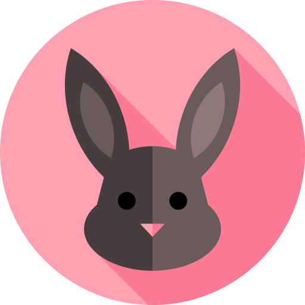

<mat-toolbar>
  <mat-toolbar-row>
    <a routerLink="" routerLinkActive="active"
      ></a>
    <a mat-button routerLink="" routerLinkActive="active">Home</a>
    <a mat-button routerLink="about" routerLinkActive="active">About</a>
    <a mat-button routerLink="experience" routerLinkActive="active"
      >Experience</a
    >
    <a mat-button routerLink="projects" routerLinkActive="active">Projects</a>
  </mat-toolbar-row>
</mat-toolbar>
